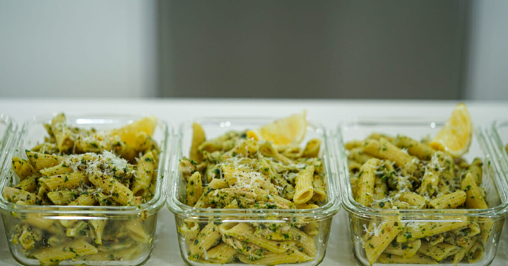
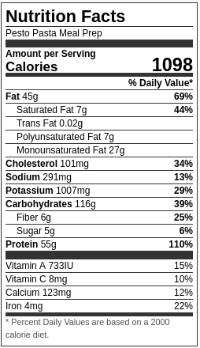

Pesto Pasta Meal Prep

The Perfect Hot & Cold Basil Pesto Pasta Meal Prep With Juicy Chicken
Ingredients
Chicken & Pasta
- 2 Tbsp (40ml) - Olive Oil (Divided)
- 750g (1.6lbs) - Chicken Breast or Thigh
- 2 tsp (5g) - Onion Powder
- 2 tsp (5g) - Garlic Powder
- 750g (1.6lbs) - Penne or Pasta of Choice
- Seasoning To Taste
Basil Pesto
- 2-3 - Garlic Cloves, Minced
- 30g (1.06oz) - Parmesan Cheese, Freshly Grated
- 30g (1.06oz) - Pinenuts, Toasted
- ½ - Lemon, Juiced
- 2 Bunches (60g) - Fresh Basil, Picked + Stems, Chopped
- ½ Cup (125ml) - Extra Virgin Olive Oil
- Seasoning To Taste
Steps
Chicken & Pasta
- Preheat oven to 200°c - 390°f.
- Add the chicken to a mixing bowl, and add in half of the oil and all the seasoning. Mix well.
- Place a pan over medium-high heat, add in the remaining olive oil and sear the chicken for 2 minutes on both sides or until golden brown. Transfer the pan to the preheated oven and cook for 13 minutes. Remove and allow to rest for 10 minutes.
- Thinly slice the chicken across the grain and set it aside.
- Bring a pot of salted water to a boil, add in the pasta of your choice and cook as per the packet instructions. Drain and let cool, reserving 1 cup (250ml) of the pasta water.
Basil Pesto
- Place the pinenuts onto a lined baking tray and roast for 4-5 minutes or until golden, in the preheated oven.
- o make the pesto, add the garlic, parmesan cheese, and toasted pinenuts to a blender, food processor, or mortar. Blend and crush into a coarse paste.
- Add the basil, extra virgin olive oil, and seasoning to taste. Blend or crush again until it forms a smooth and slightly coarse basil pesto. Adjust the flavour with the lemon juice and set it aside.
Serving
- Place the chicken, pasta, and basil pesto into a large bowl and mix well until everything is well coated. Check and adjust seasoning levels.
- Serve and divide into 5 meal prep containers. Garnish with fresh parmesan cheese, extra virgin olive oil, and lemon (optional). Dig in.
Nutrition Guide
